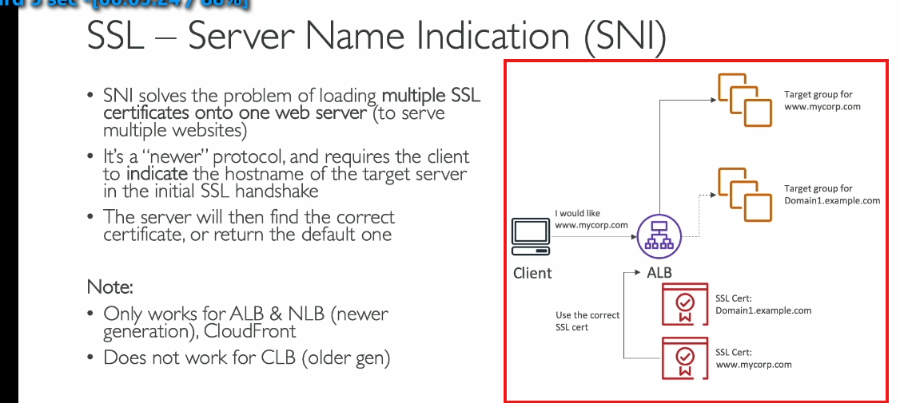

SSL'TLS SNI

SSL/TLS và tích hợp Load Balancer
1. SSL và TLS là gì?
- SSL (Secure Sockets Layer):
- Công nghệ mã hóa kết nối truyền tải dữ liệu, đảm bảo tính bảo mật trong quá trình truyền.
- TLS (Transport Layer Security): Phiên bản cải tiến của SSL, được sử dụng phổ biến hơn.
- Lưu ý: Dù TLS là chuẩn hiện tại, người ta thường gọi chung là "SSL" vì quen thuộc.
2. Chứng chỉ SSL/TLS
- Vai trò:
- Mã hóa dữ liệu giữa client và Load Balancer (LB).
- Đảm bảo dữ liệu chỉ có thể giải mã bởi người gửi và nhận.
- Chứng chỉ công khai: Được cấp bởi các Certificate Authorities (CA) như:
- Comodo, Symantec, GoDaddy, Let's Encrypt...
- Thời hạn: Cần gia hạn định kỳ để duy trì tính hợp lệ.
3. Cách hoạt động của Load Balancer với SSL
- Quy trình:
- Kết nối HTTPS: Client kết nối tới LB qua giao thức HTTPS (mã hóa).
- SSL Termination:
- LB nhận và giải mã dữ liệu.
- Trong nội bộ, LB có thể gửi dữ liệu tới backend server qua HTTP (không mã hóa) nhưng trong mạng nội bộ VPC, đảm bảo an toàn.
- Quản lý chứng chỉ:
- AWS cung cấp AWS Certificate Manager (ACM) để quản lý SSL/TLS.
- Hỗ trợ tải lên chứng chỉ bên ngoài.
4. SNI (Server Name Indication)
- Vấn đề cần giải quyết: Cho phép một server hỗ trợ nhiều chứng chỉ SSL/TLS cho nhiều domain khác nhau.
- Cách hoạt động:
- Client chỉ định hostname trong quá trình handshake SSL.
- Server sẽ phản hồi với chứng chỉ tương ứng.
- Hỗ trợ SNI:
- Chỉ hoạt động trên ALB (Application Load Balancer), NLB (Network Load Balancer) và CloudFront.
5. Ứng dụng thực tế
- Ví dụ:
- LB có 2 domain:
www.mycorp.comvàdomain1.example.com.
- Mỗi domain sử dụng một chứng chỉ SSL khác nhau.
- Sử dụng SNI, LB sẽ chọn đúng chứng chỉ dựa trên yêu cầu của client.
- Sơ đồ:
- ALB → Lấy chứng chỉ phù hợp (qua SNI) → Điều hướng đến nhóm mục tiêu tương ứng (Target Group).
Tóm tắt
- Sử dụng ALB/NLB nếu cần hỗ trợ nhiều domain và chứng chỉ.
- SNI giúp phân biệt các domain dựa trên hostname.
- ACM là công cụ AWS hỗ trợ quản lý chứng chỉ SSL/TLS tiện lợi.
- setting trong listener ở LB
ALPN trong SSL Load Balancer là cách để chọn giao thức ứng dụng phù hợp khi client kết nối với server qua TLS.
Nói dễ hiểu: - Khi bạn dùng HTTPS để kết nối, thường có nhiều "phiên bản" hoặc cách giao tiếp khác nhau, ví dụ: HTTP/1.1, HTTP/2, hoặc gRPC. - ALPN giúp client (trình duyệt, ứng dụng) và server (hoặc load balancer) quyết định sẽ sử dụng giao thức nào trong các giao thức mà cả hai hỗ trợ.
Ví dụ cụ thể:
- Client hỏi:
-
"Tôi muốn kết nối! Tôi biết dùng HTTP/1.1 và HTTP/2. Bạn hỗ trợ cái nào?"
-
Load Balancer trả lời:
-
"OK, tôi hỗ trợ cả hai, nhưng tôi sẽ chọn HTTP/2 vì nó tốt hơn."
-
Kết quả:
- Cả hai đồng ý dùng HTTP/2, và kết nối tiếp tục bằng giao thức đó.
Tại sao ALPN quan trọng với Load Balancer?
- Giảm độ trễ (latency): Vì ALPN chọn giao thức ngay khi kết nối TLS bắt đầu, không cần thêm bước nào khác để thương lượng.
- Hỗ trợ nhiều giao thức: Một load balancer có thể quản lý nhiều loại kết nối khác nhau (HTTP/1.1, HTTP/2, gRPC) trên cùng một cổng (thường là 443).
Khi nào cần chú ý đến ALPN?
- Khi bạn muốn dùng HTTP/2 hoặc gRPC qua TLS, vì các giao thức này bắt buộc phải có ALPN.
- Nếu ứng dụng hoặc server không hỗ trợ ALPN, chúng sẽ chỉ hoạt động với HTTP/1.1 (hoặc giao thức cũ hơn).